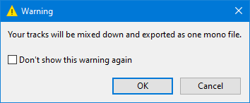
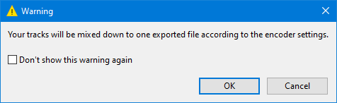
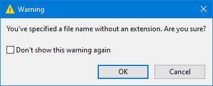

Warnings Preferences
- Accessed by: (on a Mac )

- Warnings Preferences.
Show Warnings/Prompts for
Saving projects
Every time you save a standard Audacity project Audacity will warn that this command is only for an Audacity project and that you must use an export command to produce an audio file that you can open in other applications. Once you understand this, you can turn off this warning from within the warning dialog.
| Note carefully that this preference does not enable you to turn off the warning message that you get when closing Audacity without saving your project, that warning cannot be turned off. |

Saving empty project
Audacity will warn when you try to save (left-hand image) or close (right-hand image) a project that previously contained tracks but is now empty. This warning can only be turned off in Preferences (not by a checkbox in the warning) because of the risk of accidental data loss if the warning is disabled.


When mixing down to mono during export
Audacity will warn when a mono audio file will be created as the result of an export operation that involves mixing two tracks or more.
- 
When mixing down to stereo during export
Audacity will warn when a stereo audio file will be created as the result of an export operation that involves mixing two tracks or more. If you normally want to export to stereo audio files you can turn this warning off.
When mixing with Custom FFmpeg export
Audacity will warn that your export will be to a single file according to your encoder settings.
- 
Exporting an audio file with no extension
Audacity will warn when you try to export an audio file with no extension when exporting using {external program).
- 
Low disk space at application start up
Audacity will warn on start up or when using to create a new project if you have 100 MB or less space in the temporary folder for recording or editing.
100MB is approximately 5 minutes of stereo audio or 10 minutes of mono audio at default settings.